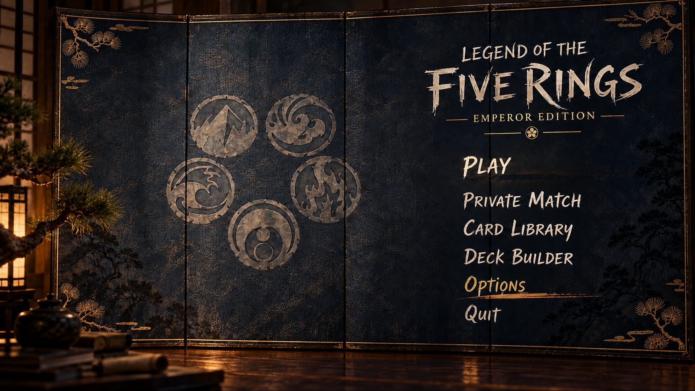
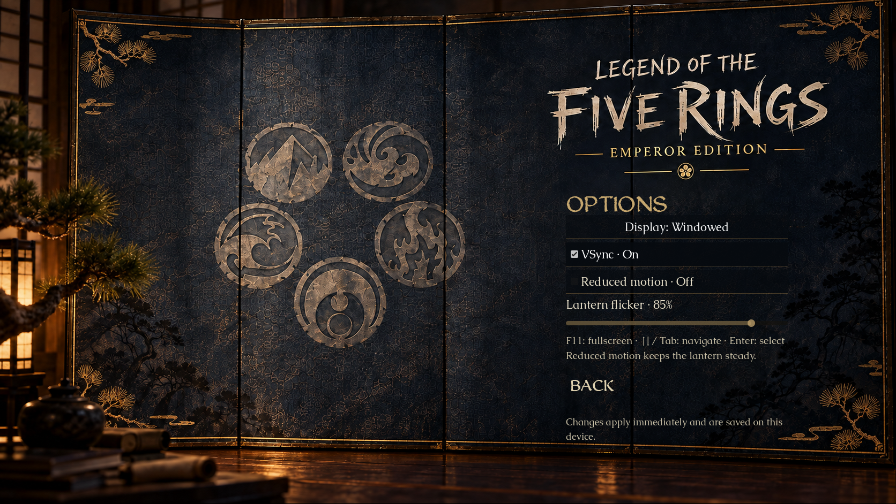
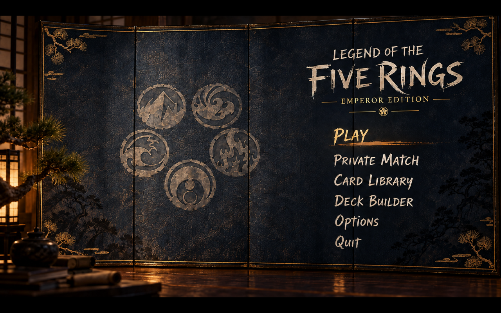
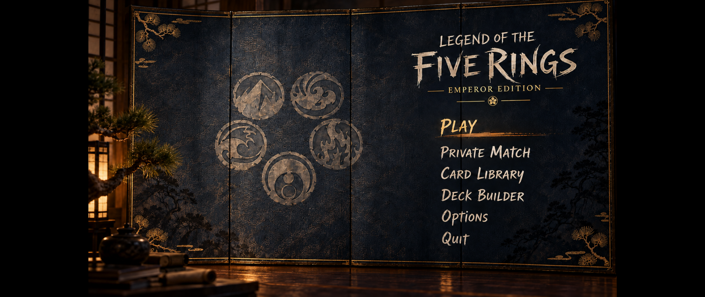

B6 · Approved source and native game
The native main menu retains the approved artwork and lettering. Static artwork matches all 1,573,352 source pixels at original size. This comparison holds lighting steady; the playable menu uses the approved slow lantern animation at 85%.
Approved B6 sourceNative Godot capture · steady light
Compare the same pixels
The capture includes a one-pixel bottom letterbox row because macOS rounds the requested 1672×941 window to 1672×942. The comparison displays the full 1672×941 artwork area. Pixel comparison evidence.
Live keyboard / hover selection

Functional Options and 85% lighting control

16:10 and ultrawide fitting


Review branch only. Main remains unchanged. Pull request #471